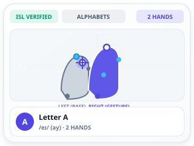

Sign Language Practice Studio
Position your hands in the webcam frame to match the target Indian Sign Language sign.
AI Recognition Integration Preparation
The camera stream uses browser-native getUserMedia. The recognition result area connects to
the Flask backend endpoint POST /api/predict (developed with OpenCV & MediaPipe by the AI
team). Use the simulation toggles below to test feedback states during development reviews.
Live Camera Feed
640x480 · 30 FPSCamera is Turned Off
Click "Start Camera" below to begin tracking your hand landmarks and practicing the target sign.
Waiting for Live AI Recognition
Turn on camera and perform the sign shown in the target box above.
Letter A (ISL)

Target Description
Both fists closed with thumbs touching each other, or right fist placed beside left thumb.
Hand Positioning Tips
- Ensure your room is well lit and your hands contrast against your background.
- Keep both hands within the blue dashed tracking zone of the camera.
- Hold your sign gesture steady for 1-2 seconds for optimal classification confidence.
- Refer to the two-handed guidance in the target box for Indian Sign Language accuracy.